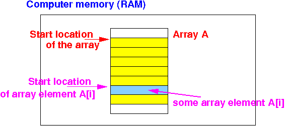
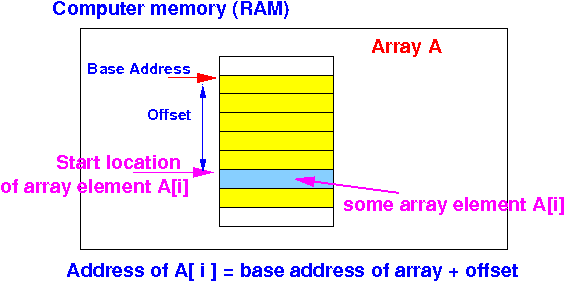
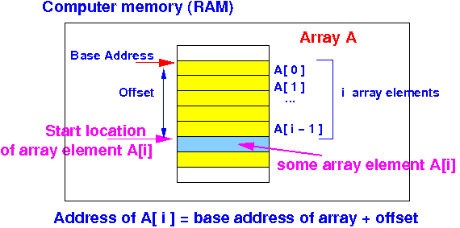

- Principle of
access data that is stored in
the computer memory:
- We can access (= read or write) data
stored in
computer memory if we know:
- The starting location in
memory
where the data is stored
- The number of bytes used to store the data
- The starting location in
memory
where the data is stored
Remember that I said in this webpage ( click here) that:
- You often need to find (= compute) the (starting) address
This comment applies whenever you access a data structure such as an array (and later: a linked list)
- We can access (= read or write) data
stored in
computer memory if we know:
- Before we start discussing how to access array elements, you need to
know what information
we have available about an
array:
- We know the data type of
the array
- From the data type,
we can find the
number of bytes used to
store elements of the
array
We need this information to decide which load register instruction to use to access an array element:
ldr for int ldrsh for short ldrsb for byte
- From the data type,
we can find the
number of bytes used to
store elements of the
array
- We know the
start address
(a.k.a.
base address)
of the array
- When we define an
array variable as:
A: .... // array definition omitted
The label A that we used will be equated to the base address of the array
- When we define an
array variable as:
- We know the data type of
the array
- We must
use these 2 pieces of information
to access
an array element !!!
- In order to
access an
arbitrary
array element
A[i], we must
find:
- The start location of the
array element A[i]:

- The start location of the
array element A[i]:
- The start location of
any array element can be
computed as the
sum:
base address of the array + offset to the array element Graphically explained: The offset is equal to the number of bytes between:
- The start location (= address) of the array and
- The start location (= address) of the (arbitrary) array element with index i
There are i array elements between the start of the array and the start of array element A[i]:
 We know the data type of the array, and therefore, we also know the size (= number of bytes) of each array element.
Because each array element has the same data type (and therefore each array element occupies the same number of bytes), the offset to the array element A[i] is equal to:
offset to A[i] = i × size(one array element)
- In summary, the
starting location (= address)
of the array element A[i]
(with index i) can be computed
as:
start address of array element A[i] = base address of array + i × size(one array element)Graphically explained:

Once you have computed the start address of the array element, you can then:
- Use
the (appropriate)
load instruction to
read the value stored in the
array element
(you must use the correct load instruction
according to the
data type of the
array element !!!)
or
- Use the (appropriate) store instruction to update the value stored in the array element (you must use the correct load instruction according to the data type of the array element !!!)
- Use
the (appropriate)
load instruction to
read the value stored in the
array element
(you must use the correct load instruction
according to the
data type of the
array element !!!)
- Because arrays are
used frequently in
computer programs,
all processors
(including the ARM processor) provides
a more advanced
load and store instruction to
access arrays (and linked lists)
We will learn this advance format of the load and store instruction next before we write assembler code to access arrays.